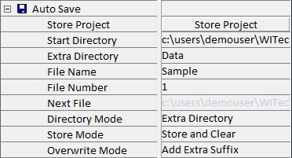

|
自动保存
|
已弃用！新的自动保存设置位于程序选项中。
此自动保存参数组仍可用于与COM 接口配合使用，例如 LabVIEW。可以通过存储项目按钮触发自动保存。自动保存功能的可用参数描述如下：

如果为自动保存过程定义的目录不存在，软件在保存时会创建它们。
存储项目
此按钮使用当前设置存储项目。
起始目录
在此字段中可以定义起始目录。文件将存储的完整路径将在下面说明。
附加目录
使用此字段可以定义保存项目的附加目录。文件将存储的完整路径将在下面说明。
文件名
文件名第一部分可以使用此字段定义。完整文件名的组成在下一个要点中描述。
文件编号
可以在此处为保存的文件分配编号。此编号将在每次保存周期自动递增，并自动扩展为四位数。例如，如果输入的编号为 2，则使用的编号将为 0002。
完整的文件名为：
[文件名] [文件编号].WIP
下一个文件
此字段仅供参考，显示将要保存的下一个文件的路径和文件名。
目录模式
可以在此选择各种模式。以下显示所有方法的文件路径结果。
无附加目录
[起始目录]\
附加目录
[起始目录]\[附加目录]\
日期
[起始目录]\YYYYMMDD\
其中 YYYY 表示年份，MM 表示月份，DD 表示日。
附加目录 + 日期
[起始目录]\[附加目录]\YYYYMMDD\
日期 + 附加目录
[起始目录]\YYYYMMDD\[附加目录]\
存储模式
存储与清除可供选择。区别在于存储与清除将在保存后清除项目。
覆盖模式
此参数仅在要保存的文件已存在时变得重要。如果选择覆盖，现有文件将被覆盖。如果选择添加额外后缀，上面显示的文件名将更改为：
[文件名] [文件编号] YYYYMMDD HHMMSSmmm.WIP
其中 YYYY 表示年份，MM 表示月份，DD 表示日，HH 表示小时，MM 表示分钟，SS 表示秒，mmm 表示文件保存时刻的毫秒。